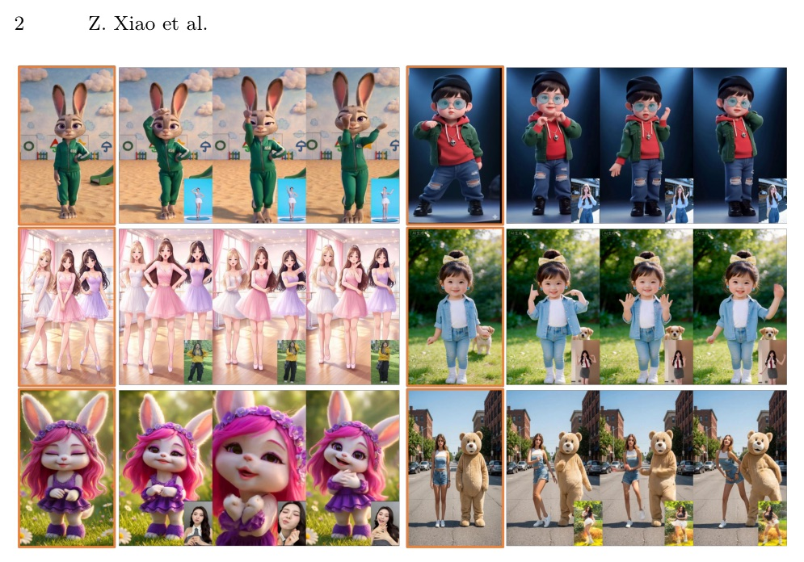
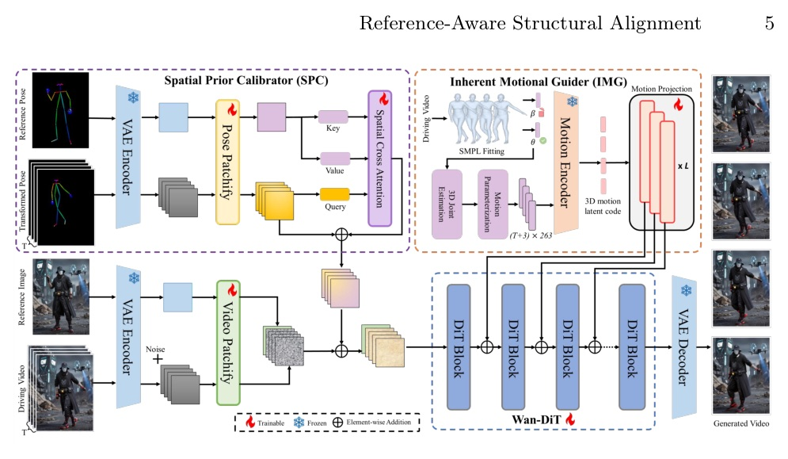
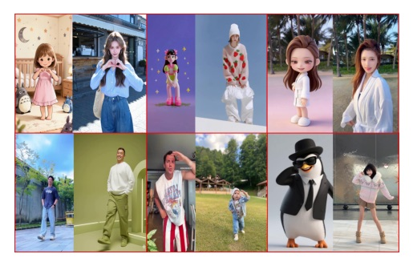
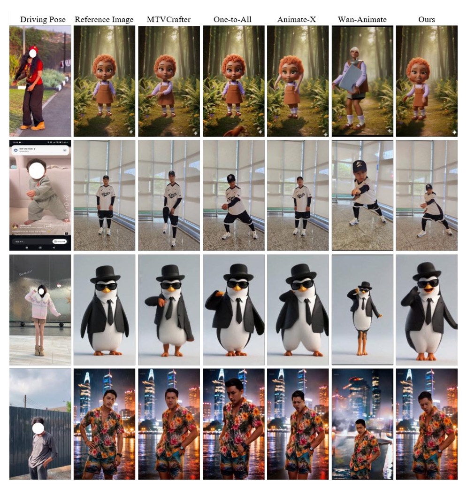
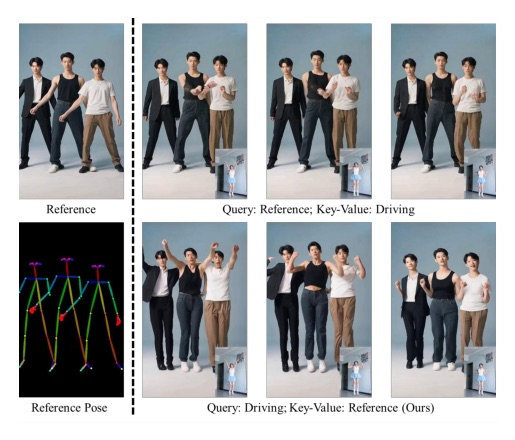
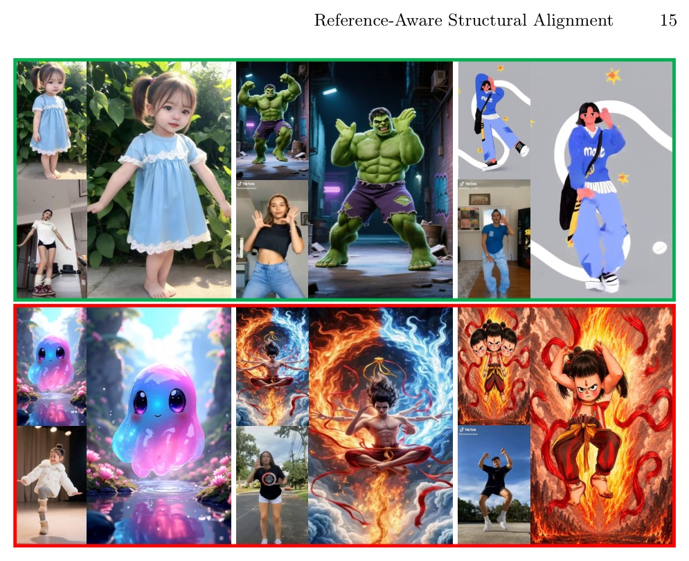

把跨身份角色動畫拆成 2D spatial calibration 與 3D motion semantic guidance 兩條訊號，不再讓比例對齊和動作控制互相污染。

RASA 的重點不是又加一個 pose condition，而是把 幾何錯位 放在 denoising 起點修、把 關節/視角一致性 放在 DiT 中層修。
常見補法
RASA 的批評

training perturbation T
learned target

| Method | PSNR | SSIM | LPIPS | FID | FVD | FID-VID |
|---|---|---|---|---|---|---|
| RASA | 22.03 | 0.830 | 0.189 | 18.93 | 190.82 | 3.32 |
| MTVCrafter | 19.37 | 0.784 | 0.217 | 19.46 | 140.60 | 6.98 |
| Human-DiT | 20.50 | 0.815 | 0.220 | 41.60 | 237.00 | 24.30 |
| One-to-All-14B | 18.07 | 0.812 | 0.254 | 50.49 | 297.94 | 13.93 |
MTVCrafter 的 FVD 較低，但用 CogVideoX-5B；RASA 用 1.3B backbone。
| Method | PSNR | LPIPS | FID | FVD | Sim-Arc | Face-FID | Latency | VRAM |
|---|---|---|---|---|---|---|---|---|
| RASA | 15.93 | 0.372 | 60.96 | 667.96 | 0.72 | 90.63 | 61s | 11,951 |
| Animate-X | 14.05 | 0.474 | 105.14 | 1312.60 | 0.51 | 146.55 | 109s | 14,263 |
| MTVCrafter | 14.19 | 0.457 | 85.21 | 1723.89 | 0.54 | 154.77 | 170s | 20,680 |
| Wan-Animate | 11.29 | 0.585 | 178.58 | 1920.88 | 0.35 | 225.29 | 327s | 42,291 |

作者觀察：MTVCrafter / Animate-X 有 motion fidelity 與 positional shifts；One-to-All / Wan-Animate 在大 structural discrepancy 下有 identity distortion 或 displacement。
| Variant | TikTok PSNR | TikTok FVD | TikTok FID-VID | CIM SSIM | CIM FVD | CIM FID-VID |
|---|---|---|---|---|---|---|
| SMS only | 18.90 | 316.45 | 10.77 | 0.453 | 737.48 | 30.93 |
| IMG only | 15.47 | 1567.03 | 15.90 | 0.416 | 1625.69 | 37.46 |
| SMS + FCA | 20.86 | 289.16 | 6.56 | 0.471 | 686.79 | 27.05 |
| Full: SMS + FCA + IMG | 22.03 | 190.82 | 3.32 | 0.472 | 667.96 | 17.63 |
Ablation 的訊息很清楚：SPC 是 2D 對齊門票，IMG 是 temporal / view consistency 的加速器。
IMG-only 最差，代表 3D semantic 不能跳過 spatial grounding；SPC+IMG full model 才把 TikTok FVD 289.16 降到 190.82，FID-VID 6.56 降到 3.32。


“spatial mapping and fine-grained motion execution should be systematically decoupled”
中文：空間映射與細緻動作執行必須系統性解耦。Introduction p.2-3
“By continuously enforcing a geometrically consistent structural prior throughout the reverse diffusion process...”
中文：SPC 不是一次性 preprocessing，而是在 reverse diffusion 全程持續施加 structural prior。§3.3 p.7
“we explicitly discard the subject-specific shape parameters (β) and construct the motion prior solely from the articulation parameters (θ).”
中文：IMG 明確丟掉 subject-specific shape，只保留 articulation，讓 motion cue 與角色身形解耦。§3.4 p.8
“SPC and IMG are highly complementary—SPC ensures accurate 2D spatial alignment, while IMG provides anatomically grounded 3D guidance...”
中文：SPC 管 2D 對齊，IMG 管 3D anatomical guidance；兩者互補，不是替代。§4.3 p.13
今天這篇的價值在機制拆分：先把 cross-identity geometry 對齊，再讓 3D motion semantics 進中層穩住 temporal / view consistency。